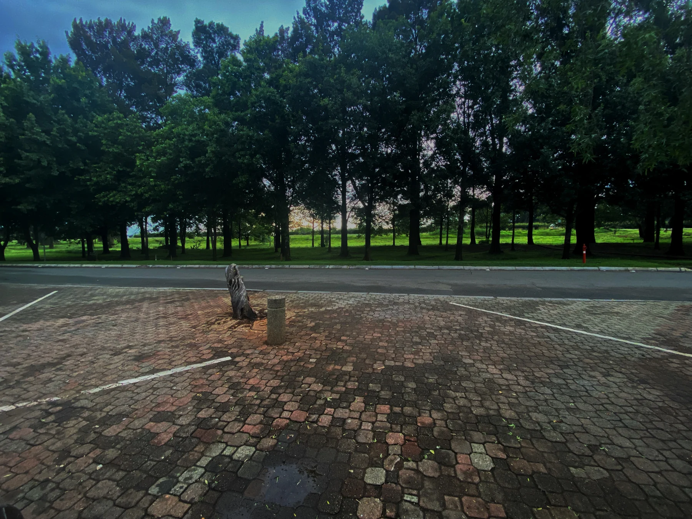
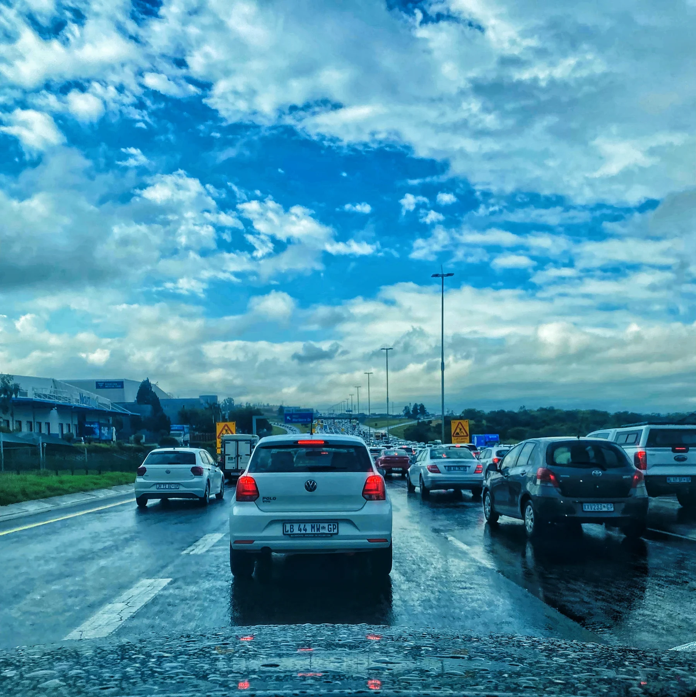
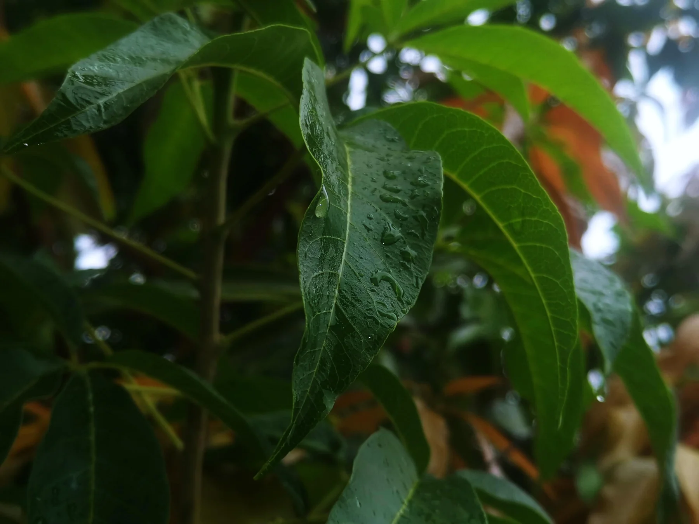
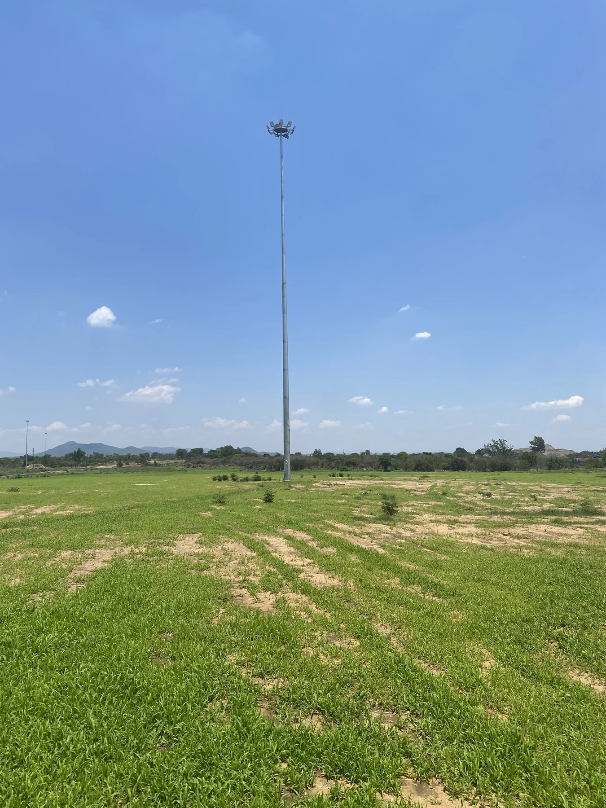
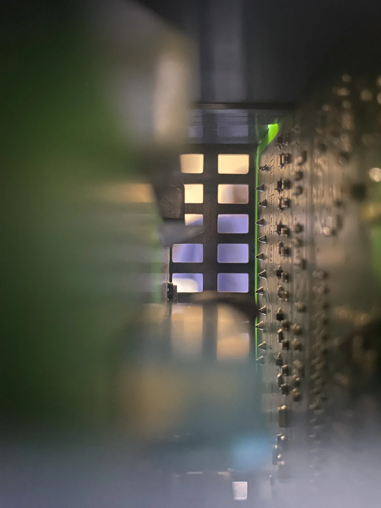
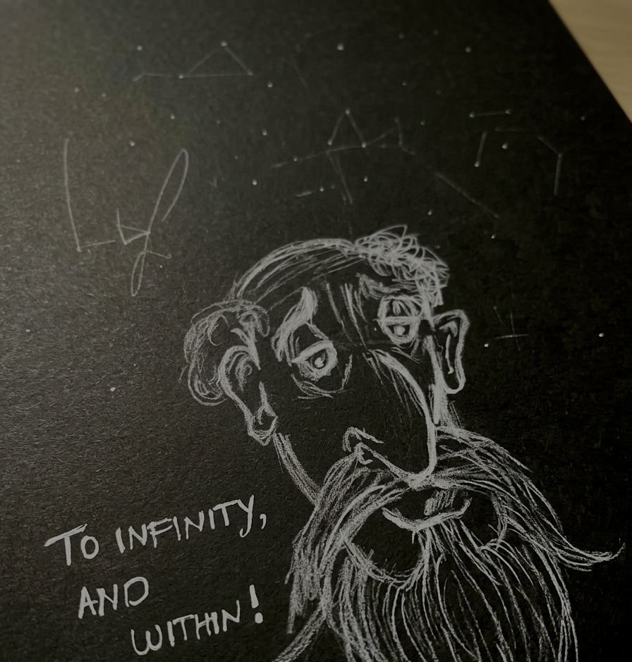
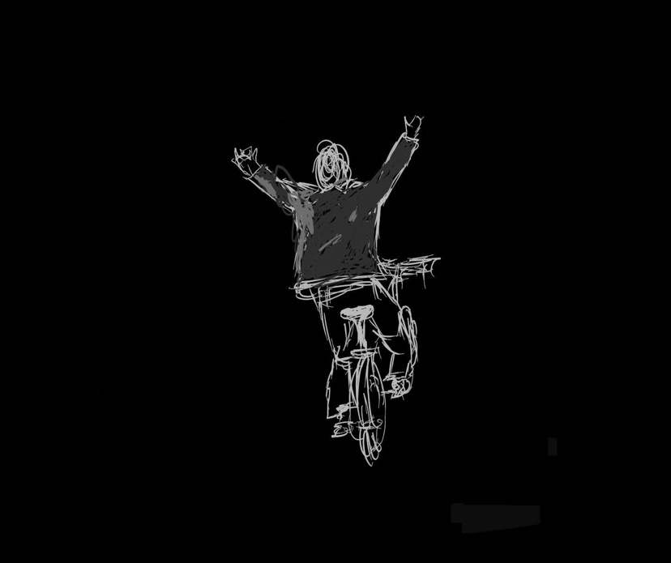

A working notebook
The undefined is not the absence of definition, but the potential for infinite definitions.

Latest post / Artificial intelligence
Just above
zero.
A 24-hour journey through data and iteration—from complete bewilderment to a leaderboard position by starting small and improving relentlessly.
Read the articleVisual journal
Fragments
And Experience.
Take a moment, smell the air. Be Dramatic. Be Real.




The archive
Choose a
thread.
Essays and experiments organised by the questions they return to: how things work, what they mean, and where we are going.
Engineering
Power, control, energy systems, and the physical world.



- 01The Energy RevolutionA battery that spins
- 02Current AffairsHVAC or HVDC
- 03Power System ProtectionHVAC faults
- 04Control SystemsAn introduction
- 05Digital TwinsThe future of system analysis
- 06PV System DesignA case study
- 07RUL EstimationMachine learning techniques
- 08Battery Life PredictionNavigating the non-linear path
- 09The LSTM Strikes AgainLessons from sequence modelling on battery data
Philosophy
Memory, identity, myth, history, and meaning.


Artificial Intelligence
Learning systems, data, models, and their limits.


- 01Just Above ZeroA 24-hour data competition sprint
- 02AI SummerAn introduction to AI
- 03Building a Digit RecognizerNeural networks from scratch with MNIST
- 04Part 1: Data AnalysisA step back
- 05Part 2: Machine LearningClassical algorithms
- 06Part 3(A): Deep LearningSupervised neural networks
- 07How to Deploy MLEverything but a guide
- 08Shona Tiny Language ModelLearning about LLMs
- 09Losing My First ML CompetitionCompetitive regression
Short Stories
Time travel, milestones, and moments of becoming.


Life, perhaps
Literature, creativity, faith, absurdity, and everyday survival.


- 01How to Survive an Alien AbductionAnd other advice
- 02Uninspired: OneA reflection on creativity
- 03Marginalia of a Mental MeltdownThe Brothers Karamazov, books 1–3
- 04A Cube for April ChristmasScarcity, abundance, and worthwhile struggles
- 05Do You Wanna Know?Kafka, metamorphosis, and dancing
- 06Alyosha the Absurdly GoodFaith in a world on fire
- 07Think Like an EngineerHabits from the lab to life
- 08Freshly Grown Ancient KnowledgeOn uttering new words
Find a post
Search the
notebook.
Search by title, topic, or a few remembered words. The archive is still growing, but the threads are already here.